Skip to presentation United States · 1820–1861
The Uncertain Witness Antebellum Gothic Science
Refraction. AI-generated conceptual artwork. New York · Literary fiction · 1845
“I say to you that I am dead!” Who could verify a statement like this?
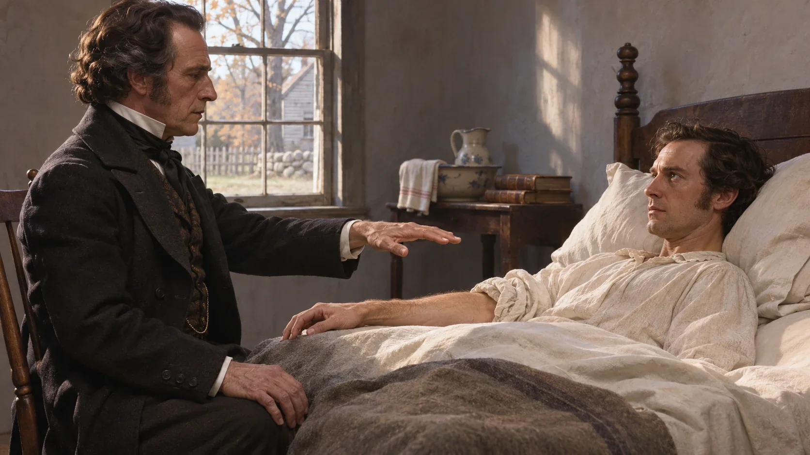
Imagined mesmerism session in an American sickroom, circa 1845. AI-generated historical reconstruction. The historical question
When did seeing become believing? In antebellum America, a twitch, a printed case, and a column of figures could command belief. Each also gave someone the power to interpret another person’s body.
Observe Separate a sign from an inference.
Trace Follow an idea across the Atlantic.
Compare Ask who gained authority. Bologna · 1791 · European prologue
The twitch on the table A prepared frog’s leg contracted when its nerve was electrically stimulated. Where did the electricity come from?
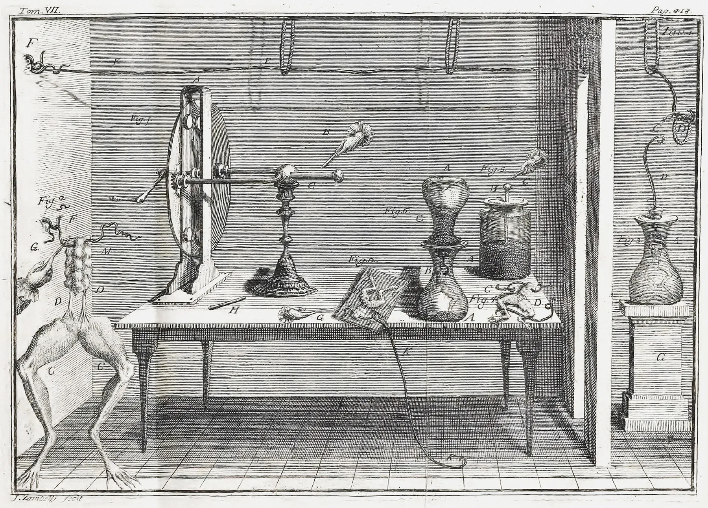
Luigi Galvani. De viribus electricitatis in motu musculari commentarius, plate I. Bologna, 1791. Wikimedia Commons. London · 1803
An eye opened. What followed? Giovanni Aldini applied electricity to the body of an executed man. The jaw moved and an eye opened.
A defensible observation Electrical stimulation produced movement.
A further claim The man could see the people around him. Philadelphia · Early nineteenth century
The experiment crosses the Atlantic Robert Hare built powerful batteries and demonstrations for students of medicine.
European apparatus Woodhouse returns with a battery.
American teaching Hare makes electrical effects visible to a room of students. New England · 1836
A mill worker made the demonstration Charles Poyen proposed an invisible magnetic influence. Audiences came to watch what Cynthia Gleason could do.
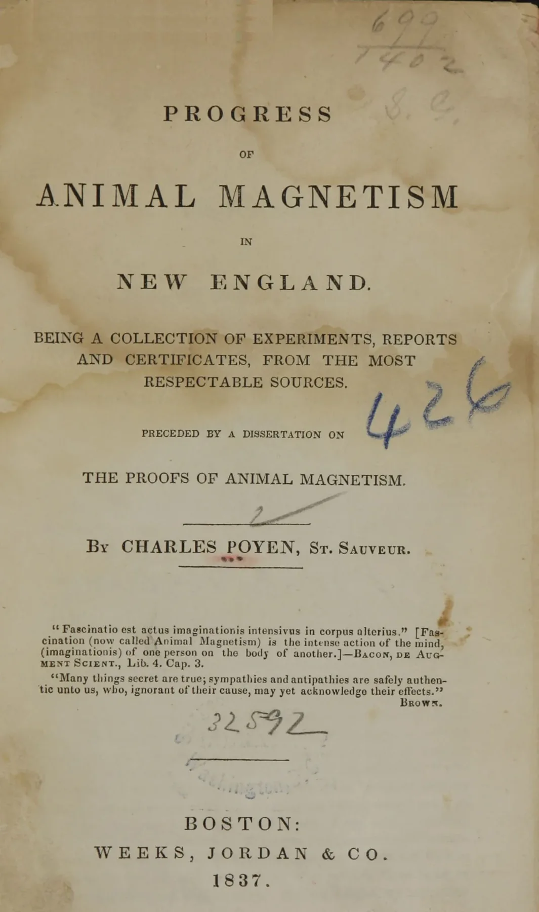
Charles Poyen. Progress of Animal Magnetism in New England. Boston, 1837, title page. US National Library of Medicine via Wellcome Collection. Boston · 1837 · Title-page evidence
“from the most respectable sources.” Charles Poyen advertised his book’s witnesses in its title. What kind of qualification was respectability?
Charles Poyen. Progress of Animal Magnetism in New England. Boston, 1837, title page. US National Library of Medicine via Wellcome Collection. American Review · December 1845
Poe builds a case file A time of death. Physicians’ initials. A student taking notes. Which of these can the reader inspect independently?
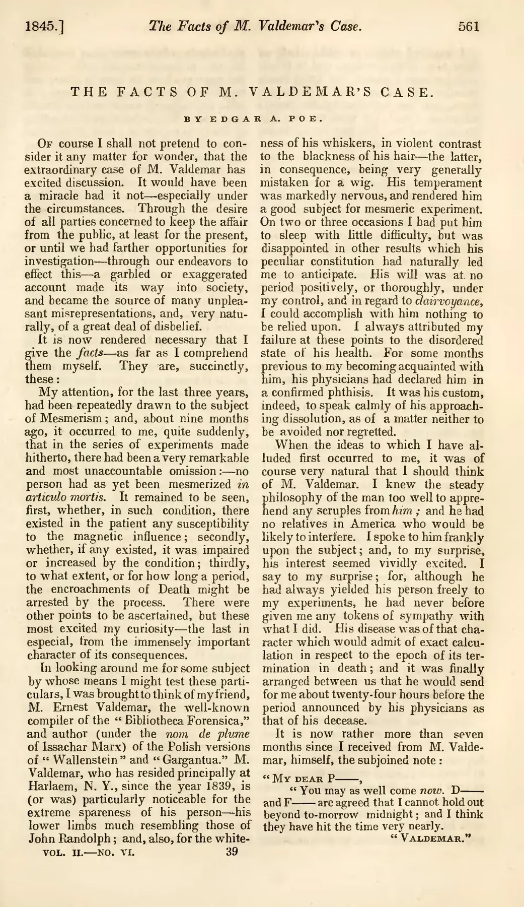
Edgar A. Poe. “The Facts of M. Valdemar’s Case.” The American Review 2 (December 1845), p. 561. Wikisource scan. New York to London · 1845–1846
One story acquires another witness A London publisher advertised a “plain recital of facts.” A Scottish reader wrote to Poe to check.
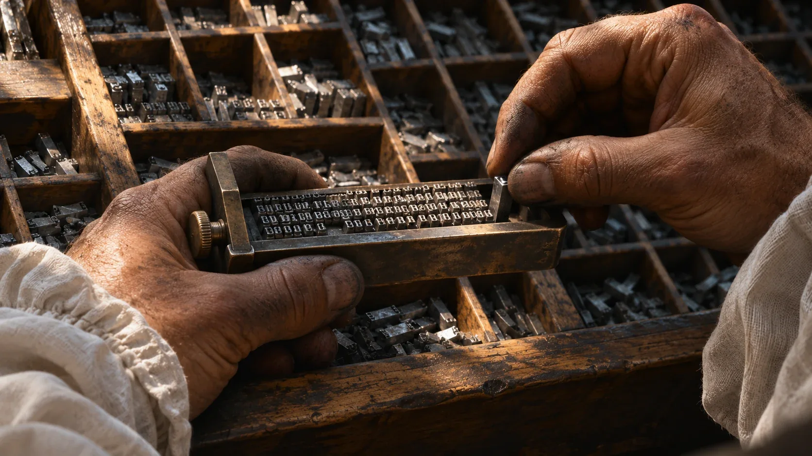
Hand composition in a period printing shop. AI-generated historical reconstruction. Evidence workshop · Pairs
Which source could corroborate the bedside account? Choose one and explain what you would need to know about its origin.
A A second printing of the same account
B A separately preserved bedside observer’s notebook
C A publisher’s claim that readers believe it Nathaniel Hawthorne · Fiction · 1843
The treatment succeeds. Georgiana dies. In “The Birth-mark,” who decided that the mark on her cheek needed a cure?
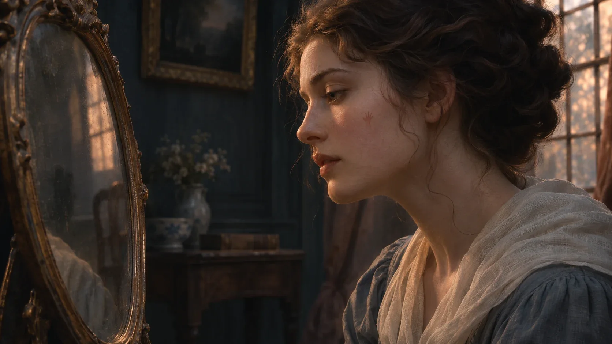
Georgiana at the looking glass. AI-generated literary illustration after Hawthorne’s “The Birth-Mark” (1843). Washington to Baltimore · May 24, 1844
A message leaves a mark “What hath God wrought?”
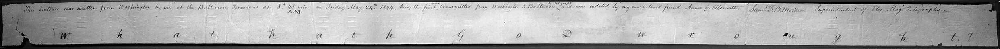
The surviving telegraph tape and handwritten identifications, May 24, 1844. Hydesville, New York · 1848
A knock becomes an answer Kate and Maggie Fox became known as mediums after their family interpreted raps as replies from the dead.
Electrical telegraph ↕ Spiritual New York weekly · Founded 1852
Philadelphia chemist · New York publication · 1855
Robert Hare wanted a mechanical witness Could a dial answer a question while a medium could not see its letters?
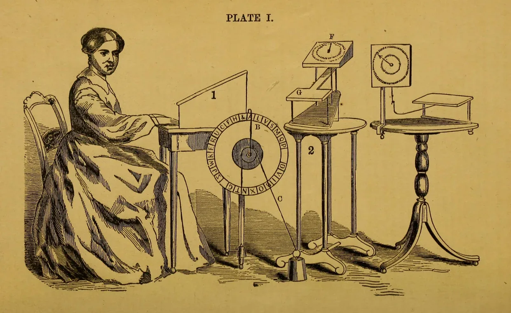
Robert Hare, Spirit Manifestations, 1855, plate I. Cropped and rotated. Evidence workshop · Compare
How would you identify the sender? A telegraph operator and a séance participant each receive what appears to be an answer.
Telegraph Compare a privately chosen message at both stations.
Mediumship What would rule out information supplied by a living participant? Philadelphia · 1839
Who chose the categories? In Crania Americana, Samuel George Morton sorted human skulls into five presumed races and compared their internal volumes.
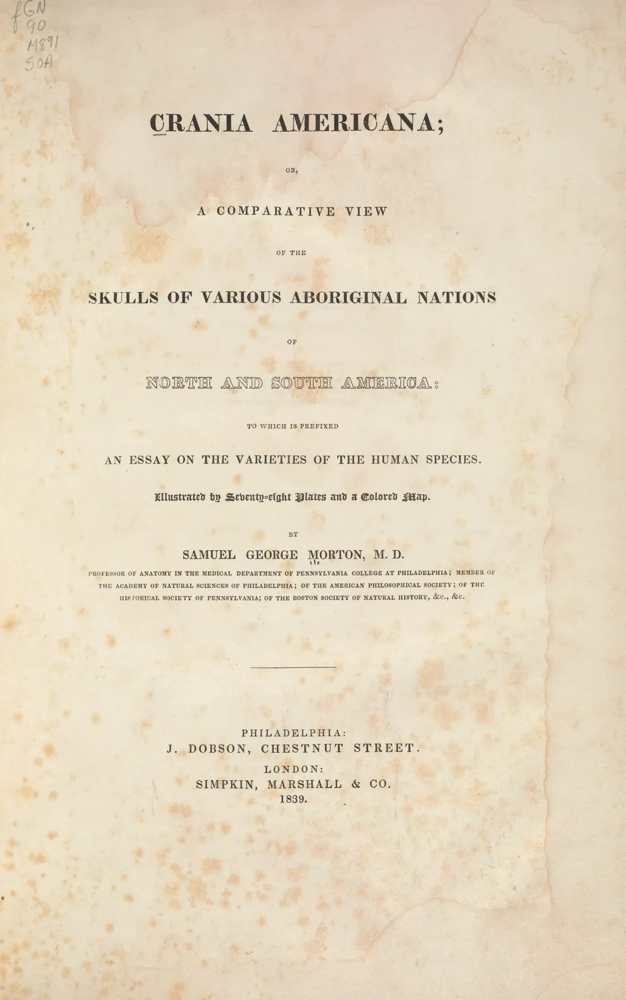
Samuel George Morton. Crania Americana. Philadelphia, 1839, title page. Smithsonian Libraries and Archives via Biodiversity Heritage Library. Primary-source lab · Crania Americana, p. 260
Read past the averages Morton’s five groups have different averages. Find a volume that falls inside every reported range.
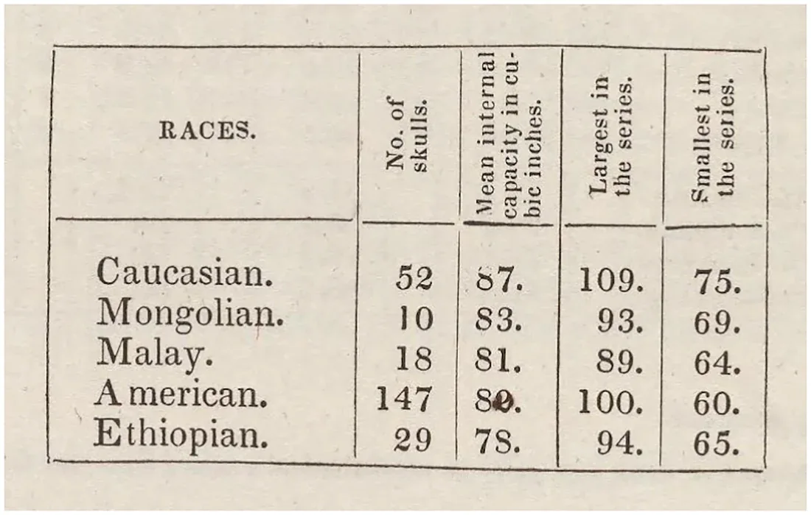
Crania Americana, 1839, p. 260. Facsimile reproduced by Mitchell, 2018. Original racial terminology · Volumes in cubic inches
The collection behind the table
Before a skull could be measured, someone had to take it. Collectors, military officers, and physicians sent human remains to Morton. Access to burial places helped determine who became a specimen.
Acquisition Who had access to burial places?
Attribution Whose name survived in the record? Western Reserve College, Ohio · July 12, 1854
Douglass cross-examines the author “Ignorance, malice or prejudice, may disqualify a witness, and why not an author?”
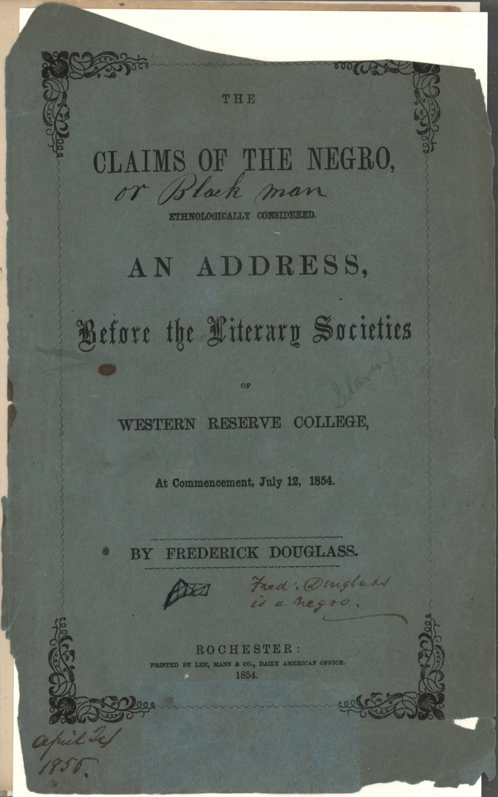
Frederick Douglass. The Claims of the Negro, Ethnologically Considered. Address of July 12, 1854, printed in Rochester. Printed wrapper, African American Pamphlet Collection, Library of Congress. Return to the opening question
What did each witness establish? Separate the record that survives from the claim made on its behalf.
An experimental plate A muscle can respond to stimulation.
A letter to a reader Poe acknowledged the fiction.
A newspaper title Believers borrowed the language of the wire.
A racial table A collector sorted and measured people. Exit exercise · 60–80 words
Write the missing museum label Choose two objects. Explain what each preserves, what someone inferred, and who stood to gain or lose if that inference won acceptance.
01 Identify two dated objects.
02 Distinguish each observation from its interpretation.
03 Name a consequence for a particular person or group. Exit gallery
Who gets the last word? Valdemar speaks, but his examiner writes the record. Douglass asks readers to put the examiner on the stand.
Refraction. AI-generated conceptual artwork. The source room
Continue the investigation. Return to the original texts, inspect the objects, and compare the interpretations.
The Uncertain Witness Imagine that a doctor tells you a dead man spoke. What is the first thing you want to know? Hold on to your question. A reader in 1845 could encounter just such a report in a magazine. This exhibition follows the evidence that made claims about life, death, and identity persuasive in the decades before the Civil War.
Here, “Gothic science” names an encounter between experimental inquiry and stories of dread, bodily vulnerability, and uncertain knowledge. It is our interpretive term. The people in these rooms called their own work chemistry, animal magnetism, literature, Spiritualism, or ethnology.
Instructor cue · 1 minutes Invite students to name one thing they would ask the doctor.
Sources for this slide Edgar Allan Poe, “The Facts of M. Valdemar’s Case,” American Review (December 1845), collated with In Articulo Mortis (London, 1846). Emily Ogden, Credulity: A Cultural History of US Mesmerism (University of Chicago Press, 2018), chapter 2. Paul Wolff Mitchell, “The Fault in His Seeds,” PLOS Biology 16 (2018), including fig. 3, a facsimile of Morton’s 1839 table. Image credit AI-generated by OpenAI for Antebellum Gothic Science, 2026. Refraction. AI-generated conceptual artwork.
Open the full-size image
Read this slide in the continuous study edition
“I say to you that I am dead!” In Edgar Allan Poe’s story, the speaker is Ernest Valdemar, a dying man who agrees to be mesmerized. The narrator reports hearing distinctly formed words long after Valdemar appears to have died. If speech is evidence of life, what are listeners supposed to make of the sentence?
Poe gives a philosophical puzzle a physical setting. The patient’s voice reaches us through the person conducting the experiment. That narrator chooses what counts as a sign of life and which details we receive. Keep track of that double role as we move from real experiments to fictional ones.
Instructor cue · 2 minutes Read the line aloud once. Give students time to identify the voice they actually have access to.
Sources for this slide Image credit AI-generated by OpenAI for Antebellum Gothic Science, 2026. Imagined mesmerism session in an American sickroom, circa 1845. AI-generated historical reconstruction.
Open the full-size image
Read this slide in the continuous study edition
When did seeing become believing? The central argument concerns authority. Public demonstrations and print made more people into witnesses, yet control over what an audience saw, who got named, and how a result was classified remained uneven. Gothic writers exposed the distance between an observer’s confident voice and what that observer could know. Black critics exposed the political stakes of that distance.
By the end, use one primary source to distinguish an observation from an inference. Explain how a European practice changed in an American setting. Then compare two cases to show whose authority increased and whose testimony was discounted.
Sources for this slide Emily Ogden, Credulity: A Cultural History of US Mesmerism (University of Chicago Press, 2018), chapter 2. Edgar Allan Poe, “The Facts of M. Valdemar’s Case,” American Review (December 1845), collated with In Articulo Mortis (London, 1846). Frederick Douglass, The Claims of the Negro, Ethnologically Considered (Rochester, 1854), especially pp. 16–21. Library of Congress, African American Pamphlet Collection. Read this slide in the continuous study edition
The twitch on the table Read Galvani’s engraving as a sequence of things to look at. The prepared limb lets the experimenter observe muscle movement separately from the behavior of a whole frog. The apparatus and conductors let a reader imagine repeating or varying the conditions. The plate gathers several arrangements into a single image.
Luigi Galvani understood the results as evidence for electricity within animals. Alessandro Volta emphasized electricity arising from contact between different metals in certain setups. The disagreement concerned the source of the effect. In modern terms, electrical excitation can cause a muscle to contract. This finding settles a question about tissue, while leaving open what counts as the life of an organism.
Sources for this slide Image credit Luigi Galvani. De viribus electricitatis in motu musculari commentarius, plate I. Bologna, 1791. Wikimedia Commons. Public domain.
View the original object and catalog record
Open the full-size image
Read this slide in the continuous study edition
An eye opened. What followed? Aldini, Galvani’s nephew, demonstrated electrical stimulation on the body of George Forster in London. His published account drew attention to the appearance of reanimation. Resuscitation mattered in an age in which a person pulled from water could appear dead. The prospect of saving an apparently drowned person helped give the research urgency.
Contraction of facial muscles can explain the visible movement. A spectator who attributed awareness to the eye supplied an inference the demonstration could not establish. Notice who could object to that inference: the audience could speak, while the executed man was available to the anatomists under the penal system.
Compare your response Only the first claim follows from the observation. An open eye tells us about the position of an eyelid. Evidence of perception would require a different test.
Instructor cue · 2 minutes Invite a vote on which claim a spectator could defend. Ask for the missing evidence before revealing the response.
Sources for this slide Read this slide in the continuous study edition
The experiment crosses the Atlantic James Woodhouse returned from England with a battery and shared his interest in galvanic experiments with his student Robert Hare. Hare developed batteries of his own and equipped a lecture room at the University of Pennsylvania for large classes. Apparatus, travelers, publications, and teaching connected European research with an American audience.
Hare gives us a person to follow across this exhibition. Decades later, his commitment to experimental demonstration would lead him to investigate claims about spirits. Watch for the change in the claim he thought his apparatus could establish.
Sources for this slide Read this slide in the continuous study edition
A mill worker made the demonstration Animal magnetism was a European theory that a practitioner could influence another person through an invisible agency, often described as a fluid. Electricity made invisible natural forces seem plausible, but the two practices had different evidentiary histories. A subject’s response could be genuine without demonstrating a magnetic fluid.
Poyen began lecturing in Boston in 1836. His demonstrations drew greater attention after he partnered with Cynthia Ann Gleason, a Pawtucket textile worker. Her responses in a state described as magnetic sleep gave audiences something to see. Historian Emily Ogden places these performances in a region where employers were already concerned with directing workers’ attention and conduct. This reading helps explain the appeal of a practice that promised influence over a will.
Sources for this slide Charles Poyen, Progress of Animal Magnetism in New England (Boston, 1837). National Library of Medicine, via Wellcome Collection. Sheila O’Brien Quinn, “The Early American Reception of Clinical Hypnosis (1830–1850),” History of Psychology 10 (2007), 231–248. University of Massachusetts Lowell Libraries, “Animal Magnetism (Mesmerism) in Lowell.” Emily Ogden, Credulity: A Cultural History of US Mesmerism (University of Chicago Press, 2018), chapter 2. Image credit Charles Poyen. Progress of Animal Magnetism in New England. Boston, 1837, title page. US National Library of Medicine via Wellcome Collection. Public Domain Mark.
View the original object and catalog record
Open the full-size image
Read this slide in the continuous study edition
“from the most respectable sources.” Look at the three kinds of evidence Poyen put together: experiments, reports, and certificates. Experiments suggested the possibility of repetition. Reports carried accounts beyond the room. A certificate lent a recognizable name to an endorsement. In Lowell, Poyen emphasized the standing of Alexander Wright, an agent of a carpet factory.
Consider the division of labor. Gleason’s performance made something visible. Men with positions in the community could certify what readers were invited to believe about it. We have more evidence here of Poyen’s strategy for earning trust than of Gleason’s private interpretation of her experience.
Compare your response Respectability described social standing. A signature can establish that someone endorsed a report. It does not establish the physical cause of an observed response.
Sources for this slide Image credit Charles Poyen. Progress of Animal Magnetism in New England. Boston, 1837, title page. US National Library of Medicine via Wellcome Collection. Public Domain Mark.
View the original object and catalog record
Open the full-size image
Read this slide in the continuous study edition
Poe builds a case file Poe’s narrator first poses a research question: could mesmerism arrest death? He obtains Valdemar’s agreement and describes clinicians attending him. Details of elapsed time and a medical student’s note-taking make the procedure sound accountable. The patient appears suspended for nearly seven months. When the narrator tries to wake him, his body disintegrates.
Examine the type on the original page. The heading calls it a case and identifies Edgar A. Poe as author. Everything inside the account, including the purported witnesses, reaches the reader through one fictional narrator. The device lets readers experience how easily the familiar form of a report can stand in for access to its evidence.
Instructor cue · 3 minutes Ask students to identify the most persuasive detail and explain why they chose it.
Sources for this slide Edgar Allan Poe, “The Facts of M. Valdemar’s Case,” American Review (December 1845), collated with In Articulo Mortis (London, 1846). American Review 2 (December 1845), p. 561, first page of Poe’s tale. Scanned periodical, via Wikisource. Thomas Ollive Mabbott, ed., Collected Works of Edgar Allan Poe, vol. 3 (Harvard University Press, 1978), commentary on “Valdemar.” Image credit Edgar A. Poe. “The Facts of M. Valdemar’s Case.” The American Review 2 (December 1845), p. 561. Wikisource scan. Public domain.
View the original object and catalog record
Open the full-size image
Read this slide in the continuous study edition
One story acquires another witness The December American Review called the story “The Facts of M. Valdemar’s Case.” The Broadway Journal printed it that month under the now familiar title, “The Facts in the Case of M. Valdemar.” A London pamphlet in 1846 surrounded the story with a promotional claim about its truth. Printing created a new occasion to believe the same account.
Specific readers left evidence of uncertainty. Archibald Ramsay, a Scottish pharmacist, sought clarification. Poe wrote back on December 30, 1846 and described the case as a hoax. The letter establishes one inquiry and an author’s answer. A claim about how many readers believed the story would require a different body of evidence.
Sources for this slide Edgar Allan Poe, “The Facts of M. Valdemar’s Case,” American Review (December 1845), collated with In Articulo Mortis (London, 1846). Poe to Arch Ramsay, December 30, 1846, letter 245 in The Letters of Edgar Allan Poe, ed. John Ward Ostrom. Thomas Ollive Mabbott, ed., Collected Works of Edgar Allan Poe, vol. 3 (Harvard University Press, 1978), commentary on “Valdemar.” Stefan Andriopoulos, “Arrested in the Moment of Dying: Science, Fiction, and the Reality Effect of Reprinting,” American Literature 90 (2018), 523–552. Image credit AI-generated by OpenAI for Antebellum Gothic Science, 2026. Hand composition in a period printing shop. AI-generated historical reconstruction.
Open the full-size image
Read this slide in the continuous study edition
Which source could corroborate the bedside account? Try this as a historical counterfactual. Imagine you received an extraordinary case report of unknown origin. What could you look for beyond another printing of the same text? An independent source would need its own route from event to record. Even a separate document could turn out to have copied the first account.
Apply that test back to Poe. A named medical witness inside a fictional narrative is part of the narrative. A bookdealer’s description and a second edition are evidence of circulation. The distinction allows a historian to learn a great deal about publication without treating Valdemar as a patient who actually underwent the experiment.
Compare your response B could provide independent testimony if the notebook were authentic, contemporary, and based on direct observation. A and C trace the story’s circulation. No such independent notebook establishes Poe’s fictional event.
Instructor cue · 3 minutes Allow one minute to choose, one to defend, and one to compare answers.
Sources for this slide Read this slide in the continuous study edition
The treatment succeeds. Georgiana dies. Hawthorne published the tale in 1843 and set it late in the eighteenth century. Aylmer comes to regard the small hand-shaped mark on his wife Georgiana’s face as an intolerable sign of human imperfection. Georgiana comes to share his distress and drinks his preparation. As the mark fades, she dies.
Poe asks what gives an account the sound of truth. Hawthorne asks what makes an experiment worth attempting in the first place. Aylmer obtains the visible result he wanted, at the cost of the person he supposedly wished to help. Georgiana’s agreement matters to the story, as does the fact that her husband taught her to see the mark as a defect.
Instructor cue · 2 minutes Ask whose definition of success would count if Georgiana lived with the mark.
Sources for this slide Image credit AI-generated by OpenAI for Antebellum Gothic Science, 2026. Georgiana at the looking glass. AI-generated literary illustration after Hawthorne’s “The Birth-Mark” (1843).
Open the full-size image
Read this slide in the continuous study edition
Messages from elsewhere
Close A message leaves a mark Samuel F. B. Morse sent the biblical phrase from Washington to Alfred Vail in Baltimore. Annie Ellsworth had suggested the words from Numbers 23:23. The receiver registered marks on a paper strip that an operator could interpret. The handwriting on the surviving artifact helps identify the occasion. A written label and the instrument’s marks serve different purposes.
The phrase framed technical achievement in religious language. Telegraphy also offered a material model for distant presence: a reply could arrive from someone the receiver could not see. Operators could compare a message at each end of a known circuit. Keep that check in mind when the language of the wire enters a different setting.
Sources for this slide Image credit Samuel F. B. Morse Papers, telegraph tape, May 24, 1844. Library of Congress. Public domain.
View the original object and catalog record
Open the full-size image
Read this slide in the continuous study edition
Messages from elsewhere
Close A knock becomes an answer At the Fox home, sounds took on the meaning of answers in an exchange. The claim depended on identifying an unseen speaker. Hearing a noise, discerning a pattern, and attributing it to a particular dead person are three distinct steps. They call for different kinds of evidence.
Spiritualism offered adherents the possibility of continuing relationships with the dead. Witnessing and testing, alongside religious conviction, mattered to many participants. The New York weekly The Spiritual Telegraph began in 1852. Its name shows how readily the language of a working communications technology could describe a spiritual hope. A title can document that analogy without proving a message’s origin.
Sources for this slide Read this slide in the continuous study edition
Messages from elsewhere
Close Robert Hare wanted a mechanical witness Hare had built electrical apparatus and taught chemistry at the University of Pennsylvania. His training left him practiced at turning a difficult-to-see effect into a public demonstration. In retirement he brought the same habits to investigating mediumship. In his 1855 book he described apparatus intended to separate a medium’s actions from a message or reading.
Read the drawing as Hare’s proposed control. A barrier to seeing letters could address one way of selecting them. It could not by itself identify a spirit as the author of a message. Hare came to believe that he had established communication with the dead. His movement between chemistry and Spiritualism helps explain why a simple opposition between science and faith misses the historical question.
Sources for this slide Image credit Robert Hare, Experimental Investigation of the Spirit Manifestations (New York, 1855), plate I. Library of Congress, Harry Houdini Collection. Public domain. Cropped and rotated.
View the original object and catalog record
Open the full-size image
Read this slide in the continuous study edition
Messages from elsewhere
Close How would you identify the sender? Pretend you have been asked to evaluate the two claims. For the wire, an operator at one station can choose a word privately and another can record the received word. Repetition with new words tests whether information traveled. The circuit, key, register, and operators can all be examined.
At a séance, receiving expected answers could feel personally significant. To attribute them to a particular deceased person, an investigator would need to exclude ways the living participants could already know or signal the answers. Even an unexplained result would leave its source to be established. The point is to ask what each test can decide.
Compare your response Agreement between two records can demonstrate transmission over a known wire. An unexplained reply at a séance leaves the identity of its sender open. The religious meaning of the encounter is a separate historical question.
Sources for this slide Read this slide in the continuous study edition
Who chose the categories? Morton treated racial categories as preexisting divisions and organized his collection accordingly. For his 1839 volume he estimated cranial capacity using seed. A measure of capacity in cubic inches could be repeated and corrected. The categories, the choice of people whose remains were collected, and the jump from capacity to intellectual rank each required a separate justification.
This was scientific racism: the use of scientific methods or prestige to naturalize racial hierarchy. A reader could mistake an orderly table for a demonstration that unequal rights reflected nature. Antebellum Black thinkers disputed both the purported evidence and its political uses. One of them will read alongside us.
Sources for this slide Samuel George Morton, Crania Americana (Philadelphia, 1839), title page and p. 260. Smithsonian Libraries, via Biodiversity Heritage Library. Paul Wolff Mitchell, “The Fault in His Seeds,” PLOS Biology 16 (2018), including fig. 3, a facsimile of Morton’s 1839 table. Frederick Douglass, The Claims of the Negro, Ethnologically Considered (Rochester, 1854), especially pp. 16–21. Library of Congress, African American Pamphlet Collection. Image credit Samuel George Morton. Crania Americana. Philadelphia, 1839, title page. Smithsonian Libraries and Archives via Biodiversity Heritage Library. Public domain.
View the original object and catalog record
Open the full-size image
Read this slide in the continuous study edition
Read past the averages Use the lowest and highest values in each original row. Reading across the ranges shows that 80 cubic inches fits every row; in fact, the intervals share 75 through 89. This is a statement about reported ranges. The table does not list how often each exact value occurred. The groups also contain very different numbers of people.
The column of means makes a ranked list easy to see. There is no column measuring intellectual performance. Scholars disagree about particular sources of error in Morton’s measurements. The argument about racial intelligence fails even if every reported volume is accepted. Historical racial labels appear here solely to identify how Morton constructed the rows.
Compare your response 80 cubic inches fits all five reported intervals. One is based on only 10 people and another on 147. The overlap undermines any attempt to identify a person’s group from that volume. No column measures intelligence.
Morton’s 1839 categories and measurements, transcribed for analysis. Original racial terminology. Label in source Count Mean Largest Smallest Caucasian 52 87 109 75 Mongolian 10 83 93 69 Malay 18 81 89 64 American 147 80 100 60 Ethiopian 29 75 94 65
Capacity is in cubic inches. The source’s categories express Morton’s racial classification.
Instructor cue · 4 minutes Let pairs choose a value, verify it against all five rows, and name the unmeasured trait.
Sources for this slide Image credit Samuel George Morton, Crania Americana (1839), p. 260. Facsimile in Paul Wolff Mitchell, PLOS Biology 16 (2018), fig. 3. Primary image public domain. Article CC BY 4.0.
View the original object and catalog record
Open the full-size image
Read this slide in the continuous study edition
Before a skull could be measured, someone had to take it. The table encourages us to imagine a neutral sample assembled expressly to answer a question. The collection had a much rougher geography. Research tracing Indigenous ancestors in Morton’s collection documents grave removal and acquisition amid military conflict and settler expansion. Those networks helped determine which bodies entered the book and which stories were recorded about them.
A skull’s catalog entry might give a collector’s name and a speculative group label while omitting the person’s own name. The omission matters twice. It limits the evidence available for any generalization, and it records an imbalance of power over the dead. A history of evidence therefore has to ask how the material was acquired.
Sources for this slide Paul Wolff Mitchell, “Embodied Dispossessions of Indigenous Ancestors from North America in the Samuel G. Morton Cranial Collection” (2022), Penn & Slavery Project / Dispossessions in the Americas. Samuel George Morton, Crania Americana (Philadelphia, 1839), title page and p. 260. Smithsonian Libraries, via Biodiversity Heritage Library. Paul Wolff Mitchell, “The Fault in His Seeds,” PLOS Biology 16 (2018), including fig. 3, a facsimile of Morton’s 1839 table. Read this slide in the continuous study edition
Douglass cross-examines the author Frederick Douglass, who had escaped slavery and become an abolitionist editor and speaker, addressed a college audience on ethnology, the study and classification of peoples. In the printed address he names Morton. He asks readers to examine how ethnologists selected faces and bodies to stand for whole populations.
Douglass pointed to a circular habit: when an intellectually accomplished Black person complicated a stereotype, a writer could discount that person’s Black ancestry. That maneuver protected the rule by redefining its exceptions. Douglass drew on variation among individuals and on examples that hostile portrayals omitted. His argument shows that nineteenth-century critics could challenge scientific racism using evidence available in their own time.
Compare your response Test the author as you would a courtroom witness. Ask who chose the illustrations, who is missing, and what evidence the author would accept as a counterexample.
Instructor cue · 3 minutes Have students apply Douglass’s question to one specific column in Morton’s table.
Sources for this slide Frederick Douglass, The Claims of the Negro, Ethnologically Considered (Rochester, 1854), especially pp. 16–21. Library of Congress, African American Pamphlet Collection. Samuel George Morton, Crania Americana (Philadelphia, 1839), title page and p. 260. Smithsonian Libraries, via Biodiversity Heritage Library. Paul Wolff Mitchell, “The Fault in His Seeds,” PLOS Biology 16 (2018), including fig. 3, a facsimile of Morton’s 1839 table. Image credit Frederick Douglass. The Claims of the Negro, Ethnologically Considered. Address of July 12, 1854, printed in Rochester. Printed wrapper, African American Pamphlet Collection, Library of Congress. Public domain.
View the original object and catalog record
Open the full-size image
Read this slide in the continuous study edition
What did each witness establish? Galvani’s experiments support a physical claim about the response of tissue to stimulation. Poe’s tale and a reader’s inquiry establish that a fictional case could invite a factual question. The Spiritual Telegraph establishes how a movement described its aspirations. Morton’s table documents an attempt to rank people and the choices that went into that ranking.
These are different kinds of evidence. The fact that a phantom sender and a racial hierarchy were both asserted does not make the stakes identical. One promise concerned reunion with the dead. Another gave authority to political subordination. Ask what a mistaken inference could cost and who would bear that cost.
Sources for this slide Luigi Galvani, De viribus electricitatis in motu musculari commentarius (Bologna, 1791), plate I. Poe to Arch Ramsay, December 30, 1846, letter 245 in The Letters of Edgar Allan Poe, ed. John Ward Ostrom. The Spiritual Telegraph (New York, 1852–1860), periodical record, Library of Congress. Paul Wolff Mitchell, “The Fault in His Seeds,” PLOS Biology 16 (2018), including fig. 3, a facsimile of Morton’s 1839 table. Frederick Douglass, The Claims of the Negro, Ethnologically Considered (Rochester, 1854), especially pp. 16–21. Library of Congress, African American Pamphlet Collection. Read this slide in the continuous study edition
Write the missing museum label Try writing without looking at the earlier screens. Name an object, place it in time, and identify one detail a visitor could actually inspect. Use the second object to make a comparison with stakes. Check the original page or the reading notes, then revise any phrase that makes a sweeping claim about what everyone believed.
A successful label makes a historical argument rather than issuing a verdict on a whole century. It gives the reader enough specific evidence to follow the inference. Different object pairings can support different answers.
Compare your response Poyen’s 1837 title page advertises the standing of witnesses to a mill worker’s performance. Morton’s 1839 table presents group averages as if categories could speak for themselves. Both made bodily observations portable in print. The certificate elevated those who could vouch for an event. The table gave racial hierarchy the appearance of numerical proof, a strategy Douglass challenged by asking how its authors chose their examples.
Sources for this slide Charles Poyen, Progress of Animal Magnetism in New England (Boston, 1837). National Library of Medicine, via Wellcome Collection. Frederick Douglass, The Claims of the Negro, Ethnologically Considered (Rochester, 1854), especially pp. 16–21. Library of Congress, African American Pamphlet Collection. Paul Wolff Mitchell, “The Fault in His Seeds,” PLOS Biology 16 (2018), including fig. 3, a facsimile of Morton’s 1839 table. Read this slide in the continuous study edition
Who gets the last word? Return to the first question you wanted to ask the doctor. Has it changed? Perhaps you first wanted to know whether the patient was alive. Now you might also ask who examined him, whose record survives, and which finding would change the examiner’s mind.
The Gothic force of these stories lies partly in the possibility that a witness can report an effect accurately and still misunderstand the person before him. In antebellum public life, that gap could become a source of imaginative pleasure, religious hope, or political injury. Reading historically means distinguishing those consequences as carefully as the evidence that produced them.
Sources for this slide Image credit AI-generated by OpenAI for Antebellum Gothic Science, 2026. Refraction. AI-generated conceptual artwork.
Open the full-size image
Read this slide in the continuous study edition
The exhibition Close The Uncertain Witness Opening “I say to you that I am dead!” Opening When did seeing become believing? Opening The twitch on the table The moving body An eye opened. What followed? The moving body The experiment crosses the Atlantic The moving body A mill worker made the demonstration The moving body “from the most respectable sources.” The moving body Poe builds a case file The printed witness One story acquires another witness The printed witness Which source could corroborate the bedside account? The printed witness The treatment succeeds. Georgiana dies. The printed witness A message leaves a mark Messages from elsewhere A knock becomes an answer Messages from elsewhere Robert Hare wanted a mechanical witness Messages from elsewhere How would you identify the sender? Messages from elsewhere Who chose the categories? The measuring room Read past the averages The measuring room Before a skull could be measured, someone had to take it. The measuring room Douglass cross-examines the author The measuring room What did each witness establish? Exit gallery Write the missing museum label Exit gallery Who gets the last word? Exit gallery Source room
Make yourself at home Close Move through the exhibition Use Left and Right arrow keys or the Previous and Next buttons. Read a slide’s explanation Choose Read & sources, or press N. Press Escape to close. Study, zoom, or print Choose Read the exhibition for a continuous, resizable edition with every explanation, source, and model response. Use your browser’s Print command there to save a PDF. Move between controls Use Tab and Shift + Tab. Activate a button with Enter or Space. The study edition opens automatically on narrow screens. Classroom pacing is approximately 50 minutes including discussion.